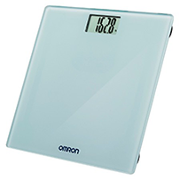
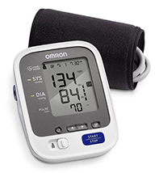
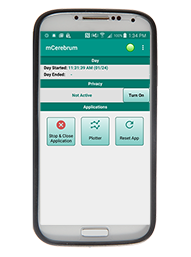

Sensors¶
The MD2K software platform is configurable for a wide variety of mobile and wearable sensors. This page shows an overview of the sensors currently integrated with the MD2K software along with a brief description of how each sensor can be used.
Motionsense Wrist Sensor¶

Motionsense HRV is a wearable wrist sensor that integrates accelerometer and gyroscope measurements. These biomarkers can be used to track the speed and orientation of hand gestures to monitor activities such as smoking, eating, brushing, and flossing.
Motionsense HRV Wrist Sensor¶
Motionsense HRV is a wearable wrist sensor that integrates accelerometer, gyroscope, and magnetometer measurements. This can be used to track hand gestures and monitor activities such as smoking, eating, and brushing teeth. This sensor also measures heart rate using signals that are detected and classified into different classes of reliability, resulting in estimates of heart rate variability (HRV) and respective confidence levels.
Easysense Chest Sensor¶

Easysense is a radio-frequency (RF) sensor that tracks fine-grain internal measurements such as lung fluid and congestion. Rather than being wearable, the sensor is momentarily held to the chest to take quick measurements that penetrate clothing and tissue.
Autosense Chest Sensor¶
Autosense chest sensor is a wearable unit with an elastic chestband and connector cables. The sensor is designed to track heart rate through ECG monitors and respiration patterns by measuring lung volume and respiratory effort. These biomarkers can be used by the mCerebrum software to monitor and predict behaviors such as stress, eating, speaking, and smoking.
Oral-B Bluetooth Toothbrush¶
The Oral-B electric toothbrush with Bluetooth connectivity works with mCerebrum software to track a user’s brushing habits. The technology can monitor the amount of time brushed as well as the force with which brushing occurs, which can result in actionable feedback both long-term and in real-time.
Omron Weight Scale¶

Omron Weight Scale is a digital scale to track a user’s weight. The sensor uses Bluetooth technology and is integrated with mCerebrum software to monitor weight measurements and maintain records of weights taken at any given intervals over a period of time.
Omron Blood Pressure Monitor¶

Omron Blood Pressure Monitor measures highly-accurate blood pressure readings to monitor a user’s blood pressure. In conjunction with mCerebrum software, these blood pressure readings can be taken at home with the push of a button and can be easily tracked over a period of time to improve patient care.
Microsoft Band¶
Microsoft Band is a wearable wrist sensor and fitness tracker that contains accelerometer and gyroscope sensors useful in tracking hand gestures and activity. The on-screen display allows for delivery of intervention and other prompts directly to the user's wrist unit.
Phone Sensors¶

In addition to the sensors listed above, the mCerebrum software also utilizies many different sensors including in a smartphone itself. Each smartphone can provide valuable information through various sensors such as accelerometer, gyroscope, GPS, battery, and activity tracking.